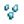
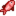

Kumsal

- Eğrelti Otu Adaları'ndaki kumsal için Zencefil Adası'na göz atın.
Kumsal, Pelikan Kasabası'nın güneyindedir. Tuzlu su balıklarının az sayıda kaynaklarından biri olduğundan balıkçılık için değerli bir yerdir. Ayrıca kumların üzerinde, özellikle Yaz 12-14 arasında bir sürü toplanılabilir öge bulunabilir.
Yazda Luau ve Ayışığı Denizanalarının Dansı festivalleri kumsalda gerçekleşir. Kışta 12-13. günlerde Mürekkepbalığı Şenliği ve 15-17. günler arasında Akşam Pazarı festivallerine ev sahipliği yapar.
Özellikler
Elliott'ın Barakası
Elliott'ın Barakası; kumsalda, girişin hemen doğusunda bulunur. Elliott; zamanının çoğunu içeride, barakasının önünde veya iskelede balıkçının yanında geçirir.
Balıkçı
Balıkçı, iskelelerin üzerinde bulunur ve sahibi Willy tarafından şiletilir. Balıkçılık ürünleri ve akvaryumlar satar.
Gelgit Havuzları

Kumsalın en doğusunda Mercan ve Denizkestanesi için birincil bir kaynak olan gelgit havuzları bulunur. Oyunun başında aradaki ahşap köprü yıkıktır ve köprü 300 odun karşılığında veya ikinci topluluk geliştirmesi satın alınarak onarılana dek gelgit havuzlarına geçilemez.
Yağmurlu veya fırtınalı günlerde gelgit havuzları bölümünün kuzeyinde Yaşlı Gemici belirir.
Işınlanma
Bir Işınlanma Totemi: Kumsal (kullanımda tüketilir) veya Su Dikilitaşı (birden fazla kez kullanılabilir) kullanılarak kumsala ışınlanılabilir. İki yolda da aynı noktaya ışınlanılır.
Kısayollar
Kasaba kısayolları satın alındıktan sonra Leah'nın Barakası'nın batı yönünde ve Müze'nin güney yönünde kumsala açılan iki geçit açılır.
Toplayıcılık
Kumsalda toplanılan her öge, 7 Toplayıcılık deneyim puanı verir.[1]
Festivallerde kumsal haritası değiştiğinden toplanılabilir ögeler ve eser noktaları genelde "haritanın altında kalır". Örneğin Akşam Pazarı festivali boyunca toplanılabilir ögeler ve eser noktaları çıkmaya devam eder ancak gözükmezler. Festival 3 günün ardından bitince (Kış 18'de) birikmiş bütün toplanılabilir ögeler ve eser noktaları gözükmeye başlar.
Standart Toplayıcılık
Kumsal, toplayıcılık için zengin bir kaynaktır. Başka yerde bulunmayan ögelerin belirmesinin yanı sıra kumsalda toplanılabilir ögelerin çıkma oranları çok daha fazladır. Çoğu toplanılabilir öge, yıl boyu çıkar. Renkli Kabuk ve Notilus Kabuğu ise mevsimsel ögelerdir:[2]
 Deniz Tarağı (Baharda/Güzde %56, Yazda %43, Kışta %24)
Deniz Tarağı (Baharda/Güzde %56, Yazda %43, Kışta %24) Midye (Baharda/Güzde %19, Yazda %14, Kışta %12)
Midye (Baharda/Güzde %19, Yazda %14, Kışta %12) İstiridye (Baharda/Güzde %19, Yazda %14, Kışta %12)
İstiridye (Baharda/Güzde %19, Yazda %14, Kışta %12) Kum Midyesi (Baharda/Güzde %6, Yazda %5, Kışta %3)
Kum Midyesi (Baharda/Güzde %6, Yazda %5, Kışta %3)- Yalnızca Yazda:
 Renkli Kabuk (%24)
Renkli Kabuk (%24) - Yalnızca Kışta:
 Notilus Kabuğu (%48)
Notilus Kabuğu (%48)
Harita, belirebilecekleri alanları kırmızı kareler ile gösterir. Bu alanlar arasında gelgit havuzları alanındaki bütün kuru kumlar ve ana kumsal alanındaki çoğu kuru kumlar bulunur. Ögelerin belirme konumlarının %80'i ana kumsal alanında bulunduğundan burada 4 kat daha fazla öge çıkar. Kumsaldaki bu toplanılabilir öge çıkma alanı sebebiyle günlük belirme oranı da gece başı 1,1'dir.[3] Ancak tek bir seferde en fazla altı öge bulunabilir ancak yukarıda listelenmemiş Mercan, Denizkestanesi ve Su Yosunu bu kısıtlamaya dahil değildir.
Kumsaldaki ögelerin çoğu mevsimsel olmasa da her mevsimin ilk gününde ve pazar sabahından önce silinirler.[4]
Gelgit Havuzları Toplayıcılığı
Çeşitli özel ögeler normalde yalnıcza gelgit havuzları bölgesinde belirebilir. Bu ögeler, standart toplayıcılık ögelerden ayrı olarak ortaya çıkar ve altı öge kısıtlamasına dahil tutulmaz.
 Mercan ve
Mercan ve  Denizkestanesi, gelgit havuzları bölgesinde çıkar (haritada mavi karelerle gösterilmiştir). İki ögenin de bir kısıtlaması yoktur. Bütün gelgit havuzları ögelerinin belirme oranı gece başına 1,2 ögedir[5] ve standart toplanılabilirlerin aksine pazar sabahları veya mevsimlerin birinci günlerinde bu oran artmaz. Gelgit havuzu ögelerinin %20'si Denizkestanesi, %80'i de Mercanlar olur. Bazen Mercanların veya Denizkestanelerinin gelgit havuzlarındaki su çalılarının arkasında çıkabildiği olabilir.
Denizkestanesi, gelgit havuzları bölgesinde çıkar (haritada mavi karelerle gösterilmiştir). İki ögenin de bir kısıtlaması yoktur. Bütün gelgit havuzları ögelerinin belirme oranı gece başına 1,2 ögedir[5] ve standart toplanılabilirlerin aksine pazar sabahları veya mevsimlerin birinci günlerinde bu oran artmaz. Gelgit havuzu ögelerinin %20'si Denizkestanesi, %80'i de Mercanlar olur. Bazen Mercanların veya Denizkestanelerinin gelgit havuzlarındaki su çalılarının arkasında çıkabildiği olabilir.
 Su Yosunu da gelgit havuzları bölgesinde çıkabilir ancak yalnızca kıyıda (haritada yeşil karelerle belirtilmiş) kısıtlı bir alanda çıkabilir. Su Yosunu çıkma oranı gece başına %3'tür.
Su Yosunu da gelgit havuzları bölgesinde çıkabilir ancak yalnızca kıyıda (haritada yeşil karelerle belirtilmiş) kısıtlı bir alanda çıkabilir. Su Yosunu çıkma oranı gece başına %3'tür.
Yaz Toplayıcılık Bonusu
Yaz 12-14 tarihlerinde kumsalda daha fazla öge bulunur. Bonus ögelerin bazıları, belirme oranları gece başına 1,1 yerine 1,4 olarak artan standart toplanılabilir ögelerdir.[6]
Aynı zamanda bu üç gün boyunca gece başı ortalama 4 oranıyla daha fazla Mercan ve Denizkestanesi belirebilir (%20 Denizkestanesi, %80 Mercan).[7] İskeleler dışında kumsalın her bölgesinde (haritada beyaz karelerle belirtilen yerlerde) ortaya çıkabilirler. Mercan ve Denizkestanelerinin ana kumsal bölgesinde ortaya çıkabildiği tek tarihler bunlardır.
BU üç gün boyunca okyanus normalden daha yeşil gözükür.[8] Ancak kumsalda gerçekleşen diğer etkinliklerin aksine haritanın yapısı değişmez ve yerleştirilmiş Yengeç Çömleği, Sandık ve Ağaç gibi şeyler durur.
Eser Noktaları
Gizli Koru'da Eser Noktaları kazılarak bulunabilecek eserler şunlardır:
 Kurumuş Denizyıldızı (%8)
Kurumuş Denizyıldızı (%8)-  Cam Parçaları (%7)
 Trilobit (%1,7 + %2,3-5[9])
Trilobit (%1,7 + %2,3-5[9]) Çapa (%4)
Çapa (%4) Notilus Fosili (%1,7)
Notilus Fosili (%1,7) Süs Yelpazesi (%1,6)
Süs Yelpazesi (%1,6) İskelet Eli (%0,6)
İskelet Eli (%0,6) Palmiye Fosili (%0,6)
Palmiye Fosili (%0,6).png/24px-Strange_Doll_(green).png) Garip Bebek (yeşil) (%0,06)
Garip Bebek (yeşil) (%0,06).png/24px-Strange_Doll_(yellow).png) Garip Bebek (sarı) (%0,06)
Garip Bebek (sarı) (%0,06)
Diğer bulunması mümkün ögeler de şunlardır:
- 1-3
 Kil (%14-30[9])
Kil (%14-30[9])  Kayıp Kitap (%20 + %3-7[9]); bütün Kayıp Kitaplar bulunduğunda, Kayıp Kitaplar yerine
Kayıp Kitap (%20 + %3-7[9]); bütün Kayıp Kitaplar bulunduğunda, Kayıp Kitaplar yerine  Karışık Tohumlar çıkmaya başlar.
Karışık Tohumlar çıkmaya başlar.- Kışta:
 Kış Kökü (%17)
Kış Kökü (%17) - Kışta:
 Kar Patatesi (%11)
Kar Patatesi (%11) - 1-3
 Taş (%5-10[9])
Taş (%5-10[9]) - 1-3
 Altın Cevheri (%2,2-4[9])
Altın Cevheri (%2,2-4[9]) - 2-5
 Qi Tohumu: %6,7-13,4[9] ihtimalle, yalnızca "Qi Ekini" görevi aktifken.
Qi Tohumu: %6,7-13,4[9] ihtimalle, yalnızca "Qi Ekini" görevi aktifken. - 2-5
 Kemik Parçası: %5,6-11,2[9] ihtimalle, yalnızca Gunther'ın özel siparişi "Geçmişin Parçaları" aktifken.
Kemik Parçası: %5,6-11,2[9] ihtimalle, yalnızca Gunther'ın özel siparişi "Geçmişin Parçaları" aktifken. - Daha önce bulunmamış bir
 Gizli Not: %3'lük bir şansa kadar, eğer oyuncu büyütece sahip ise.
Gizli Not: %3'lük bir şansa kadar, eğer oyuncu büyütece sahip ise. - 1 Işınlanma Totemi: Çiftlik, Işınlanma Totemi: Dağ veya Işınlanma Totemi: Kumsal: 1. yılın yazından itibaren %3'lük bir şansa kadar.
Kumsalda asla ne eser noktalarından ne de Balıkçılık Hazine Sandıklarından Pirinç Filizi çıkamaz.
Eser noktaları gece başı 0,4 gibi bir oran ile belirir, kışta ise bu oran gece başı 0,5'e çıkar.[10]
Balıkçılık

Köprüden akan nehir dahil kumsaldaki bütün sular, tuzlu su olarak sayılır. Bu yüzden kumsalın neresinde balık tutuluyorsa tutulsun aynı tür balıklar çıkacaktır (bu duruma tek istisna, yalnızca gelgit havuzlarının batısında tutulabilen efsanevi balıklardan biri olan Kızılbalık ve II. efsanevi balıklardan biri olan Kızılbalığın Oğludur.
Görünüş olarak iskeleler suyun daha derin kısmına gidebiliyor olsa bile oyunun mekanikleri gereğince iskeleler de "kara" olarak sayılır ve bu yüzden iskelelerin en ucundan yapılan olta atışlarının kıyıdan yapılan olta atışlarına kıyasla bir avantaj bulunmaz. Aynı şekilde kumsalın doğusunda ve batısında bulunan daha açık mavi olan su renginin oynanışa bir etkisi yoktur.
Kumsalın büyük bir kısmı su ile kaplı olduğundan baloncukların çıkma oranı, diğer yerlere göre daha fazladır.[11] Ancak yüksek balıkçılık seviyesi ile bile erişilemeyecek uzak su karelerinde de çıkabilirler.
| Saat | |||||||||||||||||||||
|---|---|---|---|---|---|---|---|---|---|---|---|---|---|---|---|---|---|---|---|---|---|
| 06 | 07 | 08 | 09 | 10 | 11 | 12 | 13 | 14 | 15 | 16 | 17 | 18 | 19 | 20 | 21 | 22 | 23 | 00 | 01 | ||
| Sadece yağmurlu gün | |||||||||||||||||||||
| 06 | 07 | 08 | 09 | 10 | 11 | 12 | 13 | 14 | 15 | 16 | 17 | 18 | 19 | 20 | 21 | 22 | 23 | 00 | 01 | ||
|  Barbunya Balığı | |||||||||||||||||||||
| Sadece yağmurlu gün | |||||||||||||||||||||
| Sadece güneşli gün | |||||||||||||||||||||
| 06 | 07 | 08 | 09 | 10 | 11 | 12 | 13 | 14 | 15 | 16 | 17 | 18 | 19 | 20 | 21 | 22 | 23 | 00 | 01 | ||
| Sadece yağmurlu gün | |||||||||||||||||||||
| Sadece yağmurlu gün | |||||||||||||||||||||
| 06 | 07 | 08 | 09 | 10 | 11 | 12 | 13 | 14 | 15 | 16 | 17 | 18 | 19 | 20 | 21 | 22 | 23 | 00 | 01 | ||
| Barbunya Balığı | |||||||||||||||||||||
| Sadece yağmurlu gün | |||||||||||||||||||||
Notlar
- Kumsalın doğu kısmına açılan yıkık köprü, Halkevi'ndeki Oluşum Odası yığınları ile onarılan taş ocağı köprüsü ile karıştırılmamalıdır.
- Akşam Pazarı dışında kumsalda eleme yapılamaz.[12]
Ek Bilgiler
- Tuzlu su olarak kabul edilen deniz suyu aslında bir sürü bitki için zararlı olmasına rağmen oyuncu okyanustan sulama kabını doldurabilir ve ekinlerini sulayabilir.
Sırlar
Referanslar
- ↑ Deneyim puanını GameLocation::checkAction kodu verir ve ögenin Object.isForage kategorisinde olup olmadığına bağlıdır. Kabuklar ve balıklar, normalde toplanılabilir öge olmamasına rağmen Object.isForage kodu ile kumsalda bulunan bütün ögeler toplanılabilir öge olarak geçer.
- ↑ Toplanılabilir her öge için, verilen oran o mevsim belirebilen bütün toplanılabilir ögelerin genel oranıdır. Girdi bilgisi Locations.xnb, GameLocation::spawnObjects'deki kod ile çalıştırılmış
- ↑ Kumsaldaki 5200 kareden 647'si (%12) standart toplanılabilir ögelerin belireceği karelerdir. Bu karelerin 133'ü de gelgit havuzları bölgesindedir. Toplanılabilir ögeler hakkında daha fazla bilgi için Toplayıcılık sayfasını inceleyin
- ↑ Beach::DayUpdate oyun kodunu inceleyin. Bütün özel ögeler GameLocation::dropObject kodu ile ortaya çıkar ve böylece isSpawnedObject ile işaretlenirler, bu yüzden de hafta veya mevsim sonlarında silinirler.
- ↑ Gelgit havuzlarında öge ortaya çıkarma işlemini Beach::DayUpdate kodu gerçekleştirir. Mercan ve Denizkestaneleri, %100 temel şansla başlar ve ardından kontrollerden biri başarısız olana kadar şansı her seferinde 0,5 ile çarparak süresiz olarak tekrarlayan bir döngü içinde ortaya çıkarılır. Asıl ortaya çıkarma oranı, uygun karelerin sayısı nedeniyle biraz azalır: kod, 300 kareden herhangi birini rastgele seçer ancak karelerin yalnızca 212'si uygun ortaya çıkarma karesidir. Su Yosunu ise ikinci bir işlem ile gerçekleştirilir. İlk Su Yosununun ihtimali 0,025'tir (0,25*0,1) ancak birden fazla işlem gerçekleştirilir. Su Yosununun çıktığı kare, ortaya çıkma oranını etkilemez çünkü Su Yosunu çıkması mümkün 17 kare de uygun ortaya çıkarma karesidir.
- ↑ Yaz 12-14'te GameLocation::spawnObjects bir yerine altı kez çalıştırılır: GameLocation::DayUpdate kodunun bir standart çalıştırmasının üstüne Beach::DayUpdate kodu beş kez daha çalıştırır. Ancak spawnObjects kodunun birden fazla kez çalıştırılması genelde gereksizdir çünkü her seferinde aynı kareler ile aynı oyun kodu test edilir.
- ↑ Yaz 12-14'te ekstra Mercan ve Denizkestanelerinin 2600 adet kare arasından 1239 adet karede çıkabilme ihtimali vardır.
- ↑ Beach::resetSharedState kodu ile yalnızca Yaz 12-14'te suyun rengi yeşile döner.
- ↑ 9,0 9,1 9,2 9,3 9,4 9,5 9,6 Eser Noktalarından ekstra öge elde etme mevsime bağlıdır. Kışta bu şans %50 daha azdır. Daha fazla bilgi için Eser Noktası sayfasını inceleyin.
- ↑ Kumsaldaki 5200 kareden 777'ü tüm mevsimlerde Eser Noktaları için ortaya çıkma kareleridir. Daha fazla bilgi için Eser Noktası sayfasını inceleyin
- ↑ Aslında GameLocation::performTenMinuteUpdate ve fishSplashPoint kodları gereğince kumsalda baloncuk çıkma oranı, diğer haritalar ile aynıdır. Ancak kodda karalar dahil haritadaki herhangi bir kare seçildiğinden ve kumsalın 5200 karesinden 2307'si (%44) su karesi olduğundan baloncuk çıkma oranı daha fazla kabul edilir.
- ↑ GameLocation::performTenMinuteUpdate konumundaki orePanPoints kod, kumsaldayken çalıştırılmıyor ancak Akşam Pazarı'nın harita kodu BeachNightMarket aktifken çalışıyor.
Geçmiş
- 1.4: Artık Su Yosunu çıkabilir. Artık Akşam Pazarı boyunca kumsala öge yerleştirilemiyor.
- 1.5: Yeni topluluk geliştirmeleri ile köprüyü onarmadan gelgit havuzları bölümüne ulaşılabilir.
| Mekanlar | |
|---|---|
| Mekanlar | Cadı'nın Bataklığı • Çiftlik Göleti • Çiftlik • Çöl • Dağ • Demiryolu • Gizli Koru • Kafatası Mağarası • Kömürözü Ormanı • Kumsal • Lağım • Madenler • Mağara • Maden Arabası • Mezarlık • Zencefil Adası • Ustalık Mağarası • Mutant Böcek Yuvası • Ormanönü • Otobüs Durağı • Pelikan Kasabası • Taş Ocağı • Taş Ocağı Madeni • Tünel |